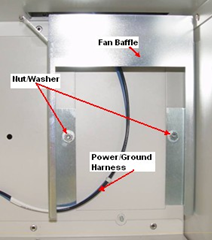
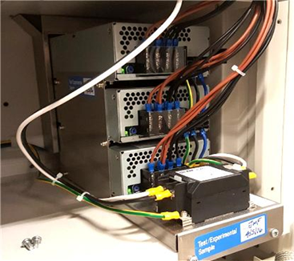

Replacing Power Supply (Cosel with new Cosel)
This procedure describes how to replace the instrument power supply when replacing a Cosel power supply with a Cosel power supply.
-
Shut down the DxI instrument.
- Select Configure > PC Admin > System Admin > Shutdown Instrument to exit the software in preparation for powering off the instrument.
- Enter the password Access2Support, and then select OK.
- At the pop-up You must now turn off the instrument, using the instrument power switch, select OK.
- After the instrument software has shut down, turn off the instrument at the power switch.
- Disconnect the instrument power cord from the rear of the instrument or from the wall outlet or UPS connection.
-
Remove the Power Supply and Input Filter.

- Open the lower right instrument door to expose the power supply.
-
Remove the power supply cover plate (5 screws).
Warning: Ensure that the instrument power cord is disconnected.
- Remove the Power Filter module and Power Supply mounting screws (3 screws).
- Disconnect the black, blue, green wires from the Power Filter module (3 screws).
- Disconnect the power outlet wires (brown and black) from the front of the mounted power supply (18 screws).
- Remove the Power Supply and Input Filter module from the instrument.
-
Replace the fan baffle located at the rear of the power supply compartment.

- Remove the fan baffle (two nuts and washers).
-
Install the new fan baffle included in the power supply kit (two nuts and washers).
Note: When mounting the baffle, push the baffle up and to the right. The mounting holes in the baffle allow adjustments in the position of the baffle.
- Route the blue and black AC power wires and the green ground wire that was removed from the power conditioner as shown in the Fan Baffle photo.
-
Install the new Cosel Power Supply.

-
Mount the Power Supply into the instrument (2 screws).
Note: If replacing a Magnetek power supply, then route the new Cosel power supply cable through the back of the compartment and connect it to the power distribution PCB. Discard the Magnetek cable.
- Remove the green wire from the new Power Filter module and connect the existing green wire to the ground terminal.
-
Slide open the terminal cover on the Power Filter module, remove the Black, and Blue wires from the Power Filter module power and connect the existing wires from the power switch to the Power Filter module terminal screws.
Note: If replacing a Magnetek power supply, then do not remove the Black and Blue wires from the new Power Filter module. Connect the new wires to the power switch. A new power switch may be needed. Discard the Magnetek wires.
- Slide the terminal cover on the Power Filter module closed.
- Remove the black and brown wires from the new power supply.
-
Connect the wires removed from the old power supply to the new Cosel Power Supply. Discard the cable removed from the new Cosel Power Supply.
- Connect each bundled output harness to the proper section of the power supply. The bundles are labeled PS1, PS2, and PS3.
- Connect the brown wires to the right or top terminals (+).
- Connect the black wires to the left or lower terminals (-).
Note: The PS1 supply is the top section of the power supply. - Connect each bundled output harness to the proper section of the power supply. The bundles are labeled PS1, PS2, and PS3.
-
Mount the Power Supply into the instrument (2 screws).
- Restore any bypassed cover interlock switches, and close all covers.
- Connect the power cord to the instrument.
- Power on the instrument.
-
Verify the proper operation of the power supply.
- Select Diagnostics > Device Diagnostics > Analog Devices > Analog Data.
- Confirm that the power supply voltages are in specification.
- Install the cover on the power supply (5 screws).